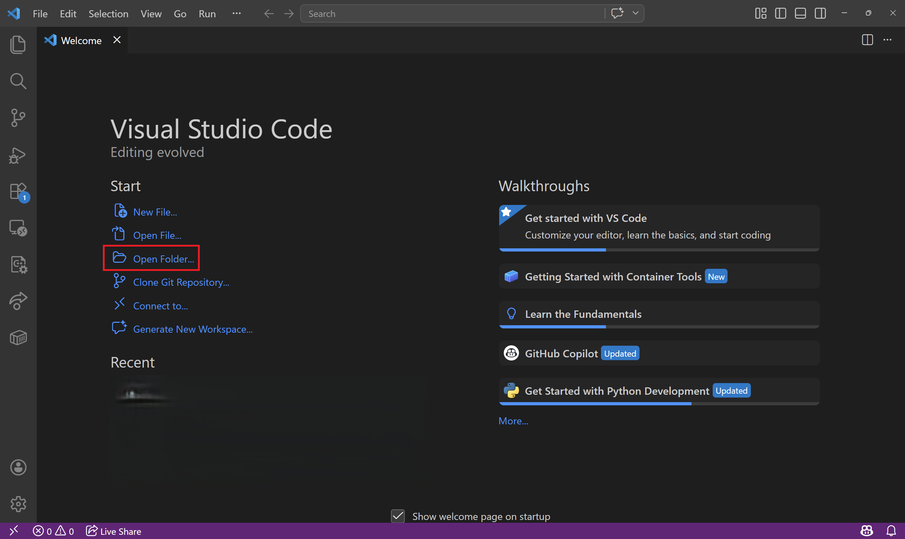
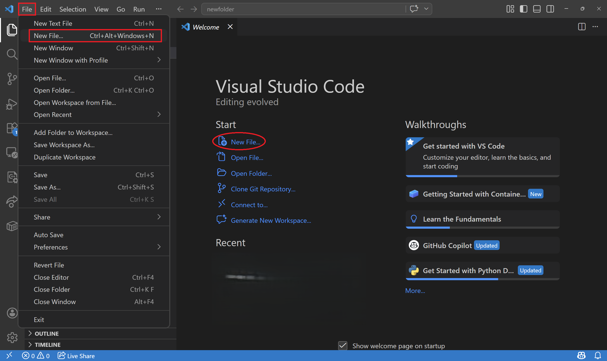
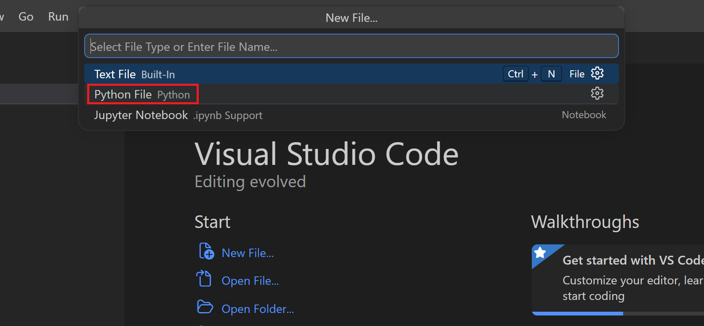
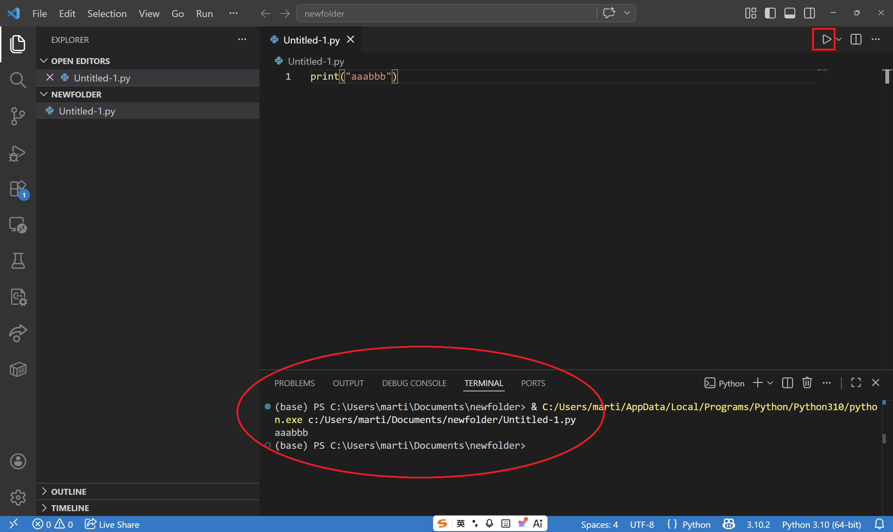
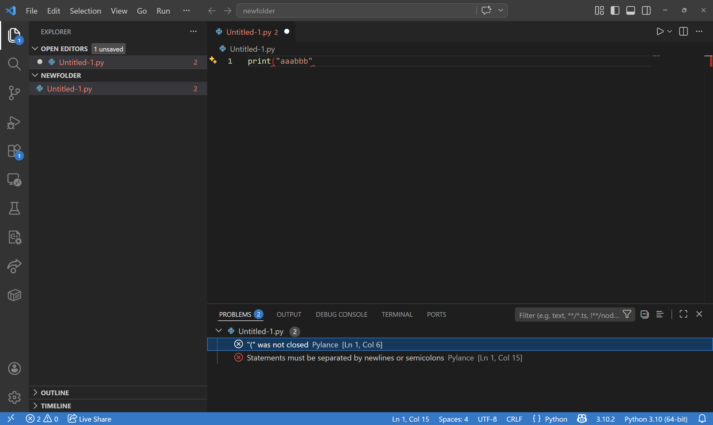
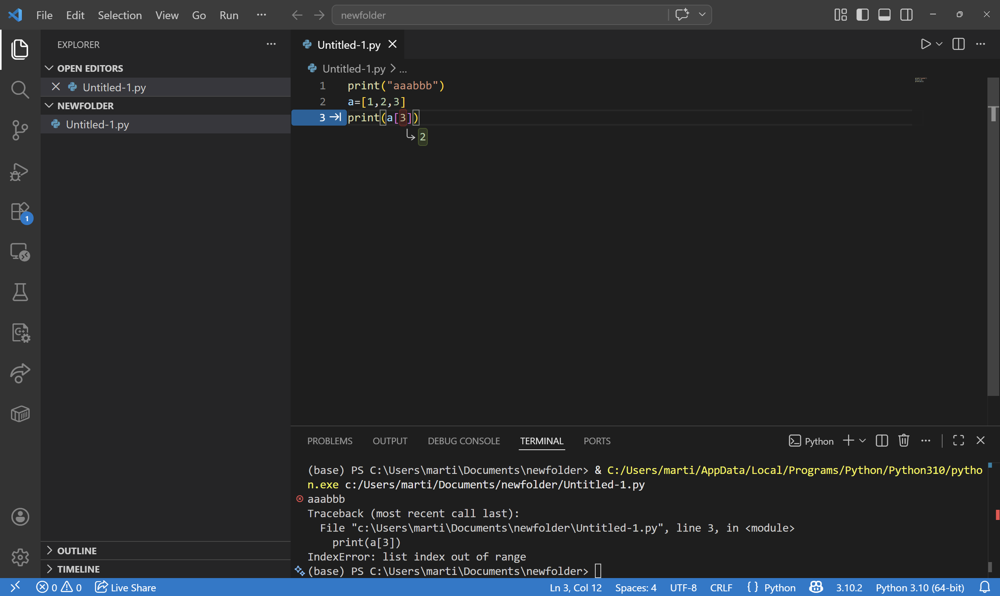
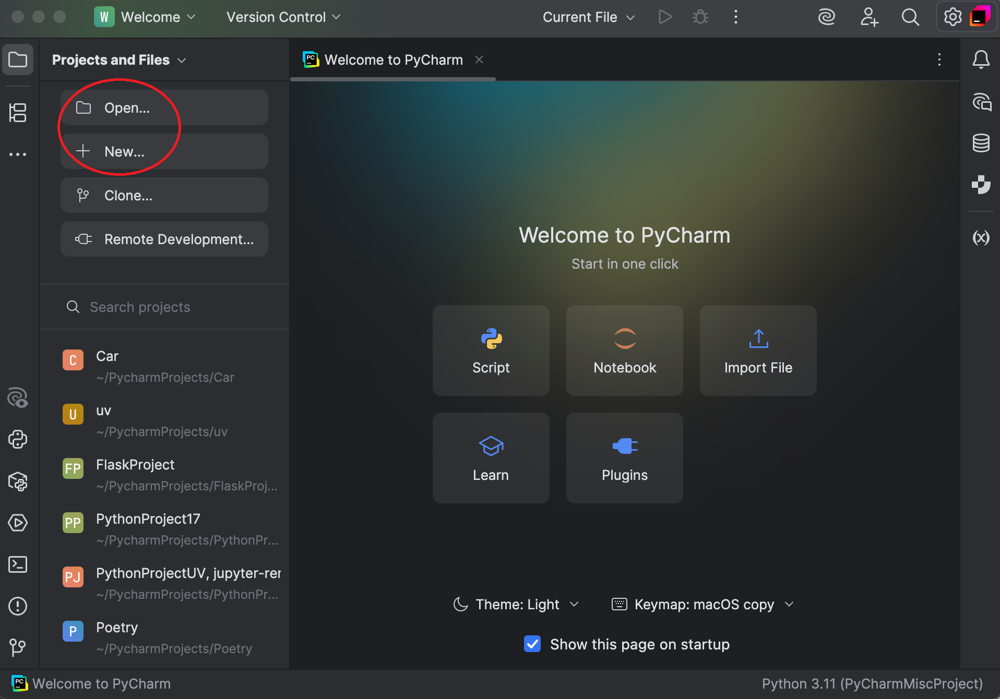
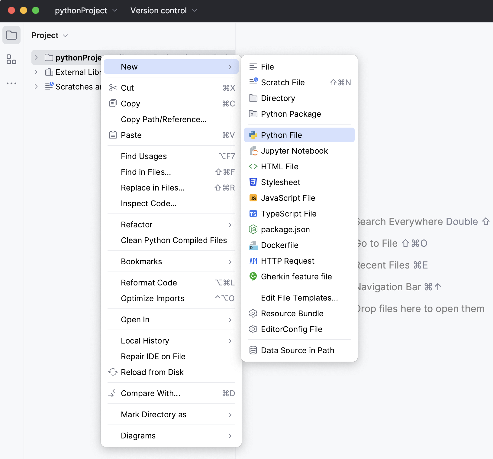
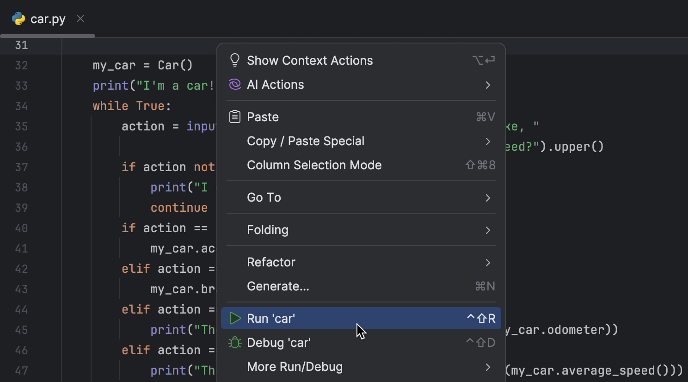

<p style="font-size: 16px; color: #999; margin:5px; position: absolute;"><a href="..">Homepage</a> | <a href="?print-pdf">Printable Version</a></p> <div style="display: flex; justify-content: center; align-items: center; height: 700px;"> <div style="text-align: center; padding: 40px; background-color: white; border: 2px solid rgb(0, 63, 163); border-radius: 20px; box-shadow: 0 0 20px rgba(0,0,0,0.1);"> <h1 style="font-size: 48px; font-weight: bold; margin-bottom: 20px; color: #333;">SI100B Spring 2026 Recitation 6</h1> <p style="font-size: 24px; color: #666;">IDE使用及课程回顾</p> <p style="font-size: 16px; color: #999; margin-top: 20px; margin-bottom:5px">SI100B 2026 Staff | 2026-04-19</p> </div> </div> <!--s--> <!--contents 1.data types: list, tuple, dictionary mutable, slicing copy(shallow, deep) 2.branching, loops range() break 3.functions 3.1 stack, recursion 3.2 parameter, scope, OOP, lambda 4.sorting(insertion, merge, quick) 5.exceptions--> ## 今天讲些什么 - 考试的形式为机考，需要使用机房电脑上提供的编程环境 - 简单介绍一下怎么使用VSCode或者PyCharm编写及运行Python程序 - 帮大家回顾一遍课上学过的知识点 <!--s--> <div class="middle center"><div style="width: 100%"> # VSCode运行Python程序 </div></div> <!--v--> ## 创建文件 - 首先打开VSCode, 选择打开文件夹以打开你的工作目录 <p></p> <!-- PixPin_2026-04-19_20-11-13.png --> <!--v--> ## 创建文件 - 点击左上角**文件** - **创建新文件**；或者点屏幕中间的创建新文件也行 <p></p> <!-- PixPin_2026-04-19_20-11-42.png --> <!--v--> ## 创建文件 - 文件类型选择Python <p></p> <!-- PixPin_2026-04-19_20-12-09.png --> <!--v--> ## 运行代码 - 然后你就可以愉快地在代码区码代码了。点击右上小三角以运行程序，此时会弹出下方的console来运行你的代码 <p></p> <!-- PixPin_2026-04-19_20-14-28.png --> <!--v--> ## 运行代码 - 当你的代码有编译时错误（compile-time error）时，VSCode会直接察觉，并体现在Problems中 <p></p> <!-- PixPin_2026-04-19_20-17-09.png --> <!--v--> ## 运行代码 - 当你的代码在运行时报错（runtime error），terminal中会提供报错信息 <p></p> <!-- PixPin_2026-04-19_20-16-45.png --> <!--s--> <div class="middle center"><div style="width: 100%"> # PyCharm运行Python程序 </div></div> <!--v--> ## 创建文件 - PyCharm中的Python程序需要在项目环境中运行 - 左上角新建项目（Project），或者打开已有项目 <p></p> <!-- PixPin_2026-04-19_20-16-45.png --> <!-- - 如果是新建项目，鉴于大家都装了Conda，可以选择**自定义环境**，选择类型为Conda，并选择你想要的Python版本 py_new_project_conda_dark.png --> <!--v--> ## 创建文件 - 要在项目中创建新的Python文件，可以在左上角项目导航栏处**右键** - **新建** - **Python文件** <p></p> <!-- py_create_class.png --> <!--v--> ## 运行代码 - 在代码区右键点击**运行"文件名"** <p></p> <!-- py_run_context_menu_dark.png --> <!--s--> <div class="middle center"><div style="width: 100%"> # 课程内容回顾 </div></div> <!--v--> ## Topics - 数据类型 - 标量与复合数据类型 - 可变性（Mutability） - 分支、循环 - 函数（Function） - 参数、变量作用域、传参 - 栈（Stack），以及递归 - 排序算法 - 异常（Exception） <!--s--> <div class="middle center"><div style="width: 100%"> # 数据类型 </div></div> <!--v--> ## 标量数据类型 - 为不可分割的最小单元 - 包含`int` `float` `bool` `NoneType`... - 类型之间可以相互转换 - 显式 (Explicit) 转换：`str()`,`int()`,`float()`... - 隐式（Implicit）转换 - 以上四种数据类型都是不可变（Immutable）的 <!--v--> ## 复合数据类型 - 为标量对象以某种结构组合而成的更大数据单位 - 包含： - <font color=RoyalBlue>字符串 `str`</font> - <font color=Red>列表 `list`</font> - <font color=RoyalBlue>元组 `tuple`</font> - <font color=Red>字典 `dict`</font> - ... - <font color=RoyalBlue>蓝色</font>代表该类型不可变（Immutable），<font color=Red>红色</font>代表可变（Mutable） <!--v--> ## 可变性（Mutability） - <font color=Red>可变的</font>对象能修改其中的值 - <font color=RoyalBlue>不可变的</font>对象一旦创建，其中的值无法被修改 <!--v--> ## 列表 `list` - 以方括号表示，如`[1, 2, 3]` - 可以含有任何对象，如`["小明", 4, [5, 6]]` - 列表对象是<font color=Red>可变的</font>： <img src="images/Screenshot 2026-04-20 002307.png" width="20%" style="float: middle;"> <!--v--> ## 元组 `tuple` - 以圆括号表示，如`(1, 2, 3)` - 可以含有任何对象，如`("小明", 4, (5, 6))` - 元组对象是<font color=RoyalBlue>不可变的</font>： <img src="images/Screenshot 2026-04-20 002429.png" width="60%" style="float: middle;"> <!--v--> ## 字典 `dict` - 以花括号表示 - 其中包含一系列**键值对**（key-value pair），以`键: 值`的形式表示 - 如`{"name": "Alice", "age": 25, "city": "New York"}` - 其实就是可以用字符串等更方便的东西来当索引 - 字典本身是<font color=Red>可变的</font>，可以修改其中内容 - 但键的类型必须是可哈希的（Hashable） - 可哈希的对象首先得是<font color=RoyalBlue>不可变的</font> <!--v--> ## 拷贝（Cloning） - 如之前列表的例子，当你把一个<font color=Red>可变</font>对象用`=`号赋值给别的对象时，实际上仅仅是给它了一个**别名**（Alias） - 那该怎样才能把可变对象完整地拷贝过去呢？可以这样： <img src="images/Screenshot 2026-04-20 002512.png" width="20%" style="float: middle;"> <!--v--> ## 拷贝（Cloning） - 这实际上是使用了`list`自带的`copy()`方法 - 另一种方法是运行`import copy`然后`b = copy.copy(a)` - 但无论是`list.copy()`还是`copy.copy()`都只实现**浅拷贝**（shallow copy），意即只拷贝一层的对象 - 有时候，我们希望把内层嵌套的所有对象都拷贝过去，实现**深拷贝**（deep copy） - 需要使用 `deepcopy` module的 `deepcopy()` 函数 <img src="images/Screenshot 2026-04-20 002631.png" width="40%" style="float: middle;"> <!--s--> <div class="middle center"><div style="width: 100%"> # 分支与循环 </div></div> <!--v--> ## 分支 - ```python if expr1: ... elif expr2: ... else: ... ``` <!--v--> ## 循环 - ```python while expr: ... ``` - ```python for item in iterable: ... ``` - 这里的`iterable`可以是`str`，`list`，`dict`，`range object` 等等 - `break`：完全跳出当前循环 <!--s--> <div class="middle center"><div style="width: 100%"> # 函数（Function） </div></div> <!--v--> ## 函数 - 把一系列复杂过程打包成一个完整**功能**（英文也是function） - **调用**（call）函数的人不需要知道它是怎么实现的 - **函数名**，**参数**（parameter），**返回值**（return value） ```python def is_even(i): # 函数定义 return i%2 == 0 print(is_even(3)) # 函数调用，>>>False ``` <!--v--> ## 函数的参数 - 参数作为函数的输入，可以对应不同的输出 - 如果函数在被调用时，能够允许某个参数不被输入，可以为其提供默认值。被提供默认值的参数称为**默认参数** - 所有默认参数必须排在所有非默认参数的后面 - 函数定义时的参数，**其名称只在该函数的内部有效** - 一个变量名有效的范围成为该变量名的**作用域**（scope） - 全局变量，局部变量 <!--v--> ## 变量作用域 - 如果想在函数内使用一个全局变量，可以将其声明为`global`： ```python count = 0 def increment(): global count count += 1 ``` <!--v--> ## 变量作用域 - Python在判定一个变量的作用域的时候会按照**LEGB**规则进行： - L(Local)：函数内声明的变量，未声明为global - E(Enclosed)：外层嵌套函数的局部作用域中的变量（由内而外） - G(Global)：全局变量（或者在函数内被声明为global的） - B(Built-in)：Python关键字 - 按照从上到下的顺序依次查找该变量的对应值 <!--v--> ## 函数是对象 - 函数也是Python**对象**（Object） - 函数可以被赋值给变量 - 可以作为参数 - 可以作为返回值 - 注意区分**函数本身**（一个功能）和**函数的返回值**（函数的结果） <!--v--> ## `lambda`函数 - 无名函数，可以用于临时传参 ```python def eval_on_2(func): return func(2) print(eval_on_2(lambda x: x**3)) # >>>8 ``` <!--v--> ## 函数 - 函数可以调用自身： ```python def factorial(n): if n == 0: return 1 else: return factorial(n-1) * n ``` <!--v--> ## 递归（Recursion） - 在更小的问题上调用自身，以这些结果为基础来计算大问题的结果 - 必须要有base case，否则会栈溢出（stack overflow） <!--v--> ## 栈（stack） - 一种数据结构，有压入（push）元素和弹出（pop）元素这2种操作 - 每次弹出的元素一定是最后压入的元素 - 函数互相调用时，函数的执行遵循此规则 - 比如当函数调用自身时： - 函数在运行时，进入该函数的子问题 - 在子问题返回之前，该函数不会返回 <!--s--> <div class="middle center"><div style="width: 100%"> # 排序算法 </div></div> <!--v--> ## 插入排序（Insertion Sort） - 把数组分成**已排序**和**未排序**两部分，每次依次取一个未排序部分的元素，插入到已排序部分的正确位置 - 最坏时间复杂度：$O(n^2)$ ```python for i in range(1, len(arr) - 1): j = i while j > 0 and arr[j-1] > arr[j]: arr[j-1], arr[j] = arr[j], arr[j-1] j -= 1 ``` <!--v--> ## 归并排序（Mergesort） - 把数组分为长度大致相等的两部分。将两部分分别视作子问题递归进行排序，然后再将两个排好的部分合并 - 合并时的每一步，将两个有序数组中最小的元素之更小者转移到合并后的数组，并将对应指针向后挪一格 - 最坏时间复杂度：$O(n\log n)$ - 合并仅需线性时间 - $T(n)=2T(\frac{n}{2})+O(n)$ ```python def merge_sort(arr): if len(arr) <= 1: return arr mid = len(arr) // 2 left = merge_sort(arr[:mid]) right = merge_sort(arr[mid:]) return merge(left, right) # merge部分略 ``` <!--v--> ## 快速排序（Quicksort） - 快排也将数组分成两部分，但相对于mergesort，它首先选中一个幸运元素 - 这个幸运元素被称为支点（pivot） - 将整个数组分成“比它大的元素”和“不大于它的元素”两部分，分别移到支点的正确一侧 - 递归对两部分进行排序 - 搞定 - 最坏时间复杂度：$O(n^2)$ - 选中的幸运元素恰好是最小（大）的，导致两边子数组严重不对称 - 平均时间复杂度：$O(n\log n)$ - 大部分情况下都是这么快 <!--s--> <div class="middle center"><div style="width: 100%"> # 异常与调试 </div></div> <!--v--> ## 异常（Exception） - 一般会导致程序无法正常运行 - Python提供了exception handler - `try except`：如果出现问题，处理问题并让程序继续运行 - `assert`：如果某条件不符合预期，直接抛异常终止程序运行 - `raise`：手动抛出某异常 <!--v--> ## 如何调试你的代码 - 首先，写代码前要三思，保持清晰的头脑和严密的逻辑 - 保持良好的代码习惯 - 不急于修改，先**定位**问题所在 - 考虑边界情况，或对其进一步测试 - 仔细审题 <!--v--> ## 如何调试你的代码 - `print()` - T0级别利器，唯一真神 - 能展示程序运行情况，灵活度高 - 程序错误信息以及函数stack trace - 能告诉你是在执行哪一步的时候出错了，错误是什么 - 其他IDE自带的debugging tools <!--s--> <div class="middle center"><div style="width: 100%"> # 有什么问题请尽情提出 </div></div> 预祝各位考试顺利！